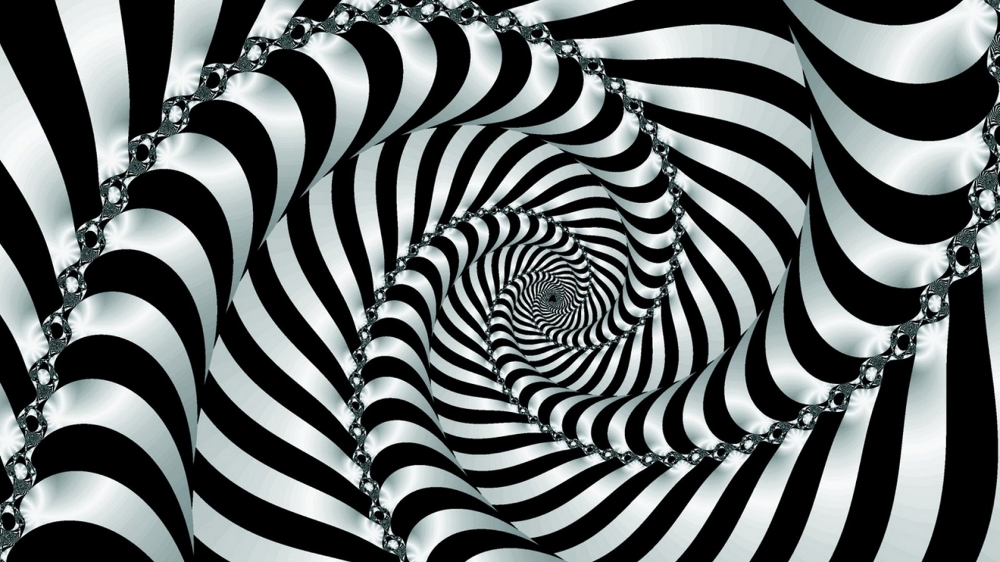

Многим по душе экстремальный горный туризм, который предлагает заняться альпинизмом,
скалолазанием, ледолазанием, горными лыжами, сноубордингом и даже велоспортом.
Но миллионы туристов из разных уголков мира стремятся посетить различные горные массивы,
чтобы полюбоваться потрясающей красотой удивительных горных массивов.
Горы занимают почти четвертую часть от всей поверхности Земли.
Эти удивительные объекты природы богаты разнообразием. Они отличаются высотой,
формой рельефа, характером вершины, степенью выраженности склона и подножием.
Таким продуктом может быть музыкальное произведение, произведение литературы,
научное знание, изображение, скульптура, различные символы и формулы и многие другие объекты,
порожденные человеческим сознанием.
Что мы знаем об абстракции?
Абстракция — это идеальный (не существующий в действительности) предмет,
созданный в результате абстрагирования — мыслительного процесса образования
абстрактных сущностей.
Понятие абстракции имеет и другое значение, это не только вид мыслительной деятельности,
но и созданный в процессе этой самой деятельности идеальный предмет. Иными словами, абстракция
– это продукт абстрагирования, имеющий некую нереальную идеальную форму.

Абстракция из ткани
Но ни та, ни другая точка зрения не верна,
так как движение мысли в данном случае осуществляется от чувственного
к рациональному осознанию действительности.